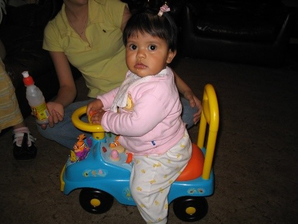
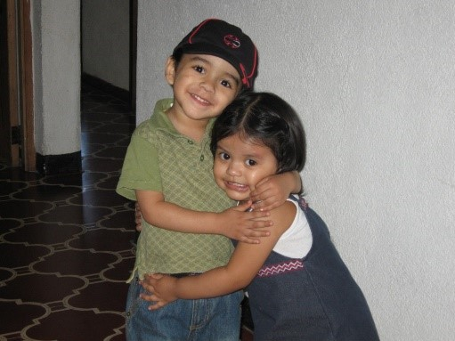
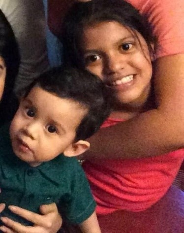
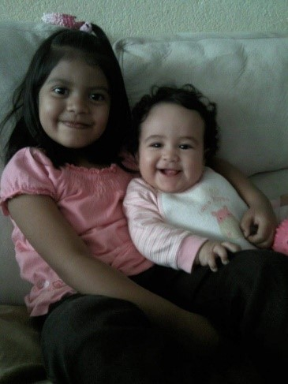
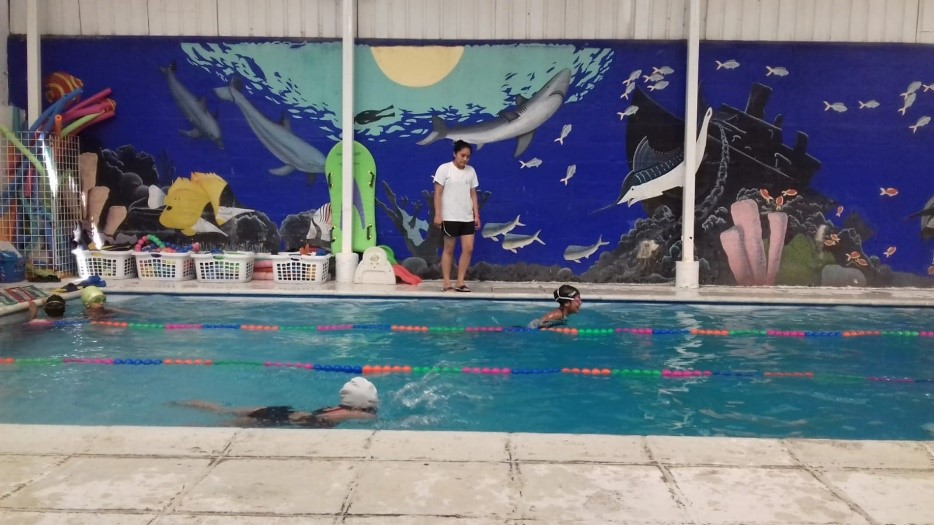

Mi Autobiografía
Introducción:
Me llamo Danah Sofia Gonzalez Sánchez tengo 16 años soy una jovencita que siempre cumple sus metas sí se lo propone, otra de mis virtudes que les podría mencionar es que soy muy responsable y puntual que va muy de la mano con cumplir lo que me propongo, soy sincera me gusta decirles a las personas la verdad, aunque a veces no es lo que esperan oír, claro siempre guardando respeto y comprensión.
Como todas las personas también tengo mis defectos, les mencionare algunos que van muy de la mano, uno de ellos es que soy muy perfeccionista y por esta misma razón me exijo demasiado al límite de llegar a estresarme causando que me bloquee y no pueda proseguir con lo que estoy haciendo.
Un dato interesante sobre mi es que se me facilita aprender cosas si las pongo en práctica como la matemática que es una de mis materias favoritas ya que puedo poner en práctica lo que me enseñaron resolviendo operaciones.
Una Noche Antes:
Un jueves 7 de abril por la noche llego el dia que Javier Gonzalez de 19 años y Mildred Sánchez de 17 esperaban con mucha alegría, pero temían tanto ya que por ser tan jóvenes no sabían cómo afrontar la nueva experiencia de que un bebe llegara a sus vidas.
Eran las 5:00 de la tarde y mis papás estaban alistando todas las cosas que la ginecóloga de mi mamá le había recomendado llevar para mi nacimiento y para su comodidad, cuando ya estaban listos antes de salir de la casa, mi abuela y mis tíos les dieron ánimos, fuerzas y bendiciones para que no llegaran al Sanatorio tan asustados, pero por lo que me cuentan mis papás aun seguían asustados por lo que iría a pasar el siguiente día.
A las 7:00 pm más o menos mis papás salieron de mi casa para llegar al Sanatorio Las Majadas que por cierto es el lugar donde nací, al llegar se registraron en la recepción donde le dieron a mi mamá unas hojas que tenía que llenar donde pedían su tipo de sangre y esas cosas, luego de eso se fueron a la habitación que le habían asignado a mi mamá donde se quedaron a dormir que sin duda fue lo menos que hicieron.
El Gran Día:
Al siguiente día ya era 8 de abril el día en que nací mi papá me cuenta que a las 4 de la mañana él ya estaba despierto y listo esperando a que dieran las 5:00 ya que a esa hora iban a alistar a mi mamá para la cirugía, cuando dieron las 5 llegaron las enfermeras a hacerle un lavado intestinal a mi mamá, mi papá en ese momento salió de la habitación y un doctor le indico que fuera a una habitación donde estaban las batas, mascarillas y esas cosas, para que así pudiera ponerse el equipamiento para entrar al quirófano junto a mi mamá.
Mientras tanto a mi mamá en otra habitación le estaban poniendo una inyección llamada epidural para que no sintiera nada a la hora de manipularla, ya puesta la inyección la llevaron al quirófano y unos minutos después mi papá entró a apoyarla.
En esos momentos mi papá me cuenta que empezaron a cortar a mi mamá y también estaban como quemando la piel donde le habían cortado a mi mamá para sellar la herida, cuando terminaron de cortar mi papa dice que vio como un doctor metió un utensilio en la herida de mi mamá para poder sacarme y en ese mismo instante el pediatra me tomó del cuello y me sacó y claro empecé a llorar como todo bebe, de ahí el pediatra me llevo a una habitación donde me empezaron a sacar como unas ligas de los pulmones, mi papá dice que estaba llorando pero que cuando el me empezó a hablar yo me tranquilice, después de un momento de estar en esa habitación mi abuela y mi abuelo se asomaron a intentar ver por un pequeño espacio para ver si conmigo estaba todo bien, claro en ese momento mi papá les dijo con señas que todo estaba muy bien, en ese mismo momento el pediatra le dijo a mi papá que se saliera porque ya había estado mucho tiempo en la habitación, en ese instante mi papá se acordó que había dejado a mi mamá en el quirófano, corriendo fue a el quirófano a ver como estaba mi mamá, lo único que mi mamá le pregunto a mi papá fue que, si todo estaba bien conmigo y claro él le respondió, pero por la inyección que le habían puesto se durmió al instante.
Mientras tanto a mi me llevaron a la habitación sala cuna que todo Sanitario y Hospital tienen para dejar a los bebes ahí, mi papá estaba muy emocionado con mi nacimiento así que fue a la sala cuna a cargarme y admirarme como lo hacia mi familia del otro lado del vidrio que dividía la sala cuna con la sala de espera. Eso causo que yo en cuestión de tiempo yo me mal acostumbrada a que me durmiera cargada eso hizo que no me quisiera dormir sin que alguien me tomara en brazos y por eso mi papá me cuenta que las enfermeras del sanatorio lo regañaban ya que por su culpa yo no me quería dormir sin que me cargaran y a ellas les costaba ya que tenían que cuidar, alimentar y dormir a más bebes aparte de mí.
Por otro lado a mi mamá después de que hayan terminado de coserle la herida la llevaron a su habitación y antes de irse las enfermeras le indicaron a mi mamá que no hablara ya que por la manipulación que habían hecho en su cuerpo los órganos estaban vacíos y era muy facil que le entrara aire, esto también se lo recomendaron mi abuela y mi tía pero claro que mi mamá en su inexperiencia e ignorancia hablo como en un dia normal y eso causo que se le hinchara el estómago haciendo que le doliera bastante haciendo que las enfermeras le dieran unas pastillas para tranquilizarle el dolor, pero viendo el lado bueno aprendió la lección.

Anécdotas que recuerdo poco:
En diciembre de 2005 cuando tenía como 9 meses mi familia me cuenta que mi abuela me regalo un carrito de Nemo para que jugará, pero lo que todos me cuenta que yo sin siquiera saber caminar sabia usarlo muy bien y todos estaban muy sorprendidos por eso.
Otra de las anécdotas que mis papás me contaron es que a mi solo me gustaba dormir bailando la canción Desvelado de Bobby Pulido con mi papá cargándome, mi mamá me dice que podía ser bastante tarde y yo esperaba que mi papá regresara de trabajar para que el me durmiera mientras bailaba conmigo cargada.

Una cosa que también me cuenta mi familia era que mi primo Ennzo 9 meses mayor y yo éramos inseparables ya que vivimos en la misma casa él y yo pasábamos jugando toda la tarde de todo lo que se nos pudiera ocurrir, una de las cosas que no recuerdo, pero mi familia me lo dice es que cuando estaba más pequeña él quería estarme cargando, mordiéndome los cachetes y pellizcándome cuando tenía oportunidad.
Otra cosa mucho mas resumida es que cuando tenia 5, 9 y 12 años nacieron mis primos Mia, Aron y Rodrigo con los cuales tengo una buena relación.
 
Momentos Que Más Recuerdo:
Mis Películas =Recuerdo muy bien que mi mamá por tenerme muy joven tuvo que dejar un poco de lado sus estudios para cuidarme mientras estaba muy pequeña pero cuando ya entre al colegio a mis tres años para cumplir 4 mi mamá decidió seguir sus estudios en plan sabatino en la carrera secretaria Oficinista en el Liceo Clásico en Computación.
Tengo el recuerdo muy claro que cada vez que ella regresaba de estudiar me traía una película para que viéramos jutas por la tarde, la mayoría de las películas eran de princesas o de barbie, pero había una en especial que me encantaba se llamaba “Hotel de perros” que repetía muchas veces ya que era mi favorita, también la veía una y otra vez con mi primo cuando íbamos a ver una película el claro hacia lo mismo, pero con la saga de películas de Rocky o también una que nos gustaba ver era la película que se llama “Mira quien Habla 2” era muy chistosa por eso la veíamos aunque recuerdo que el fue el que me dijo que la viéramos ya que él ya la había visto con sus papás y me la quiso mostrar.
La Graduación de mi mamá =Cuando tenía 4 años tengo un vago recuerdo, era de noche y que todos se estaban alistando para que no sabía, pero a mí ya me tenían vestida y lista con un vestidito de color café con rayas negras.
Luego recuerdo muy bien ir en el carro y ver por la ventana un gran hotel donde mi papá se parqueo en la entrada y yo baje de la mano con mi papá, entramos y pude ver una piscina por un pasillo donde estábamos pasando, luego recuerdo haberme sentado en una silla en un salón grande donde mi papa y mi abuela se sentaron conmigo, yo estaba bastante aburrida por que como era un graduación pasaban alumnos y a mi mamá todavía no la mencionaban así que mi papa me dio su teléfono Nokia y me puse a jugar un juego que se llamaba “Bounce Tales” que se trataba de una pelota roja donde tenias que pasar niveles era muy divertido, de repente oí cuando dijeron el nombre de mi mamá y me levante junto a mi papá y mi abuela a aplaudir mientras ella pasaba por la tarima y recibía su diploma saludando a cada coordinador y profesor.
 La Natación =
La Natación =
Desde que tenía 4 años mis papás decidieron meterme a cursos de natación para que aprendiera a nadar, iba todos los sábados y era uno de mis hobbies favoritos recuerdo decirle a mi mamá que quería ir de lunes a viernes.
Pero uno de los recuerdos más claros que tengo en esas clases de natación fue una vez donde nos dijeron si nos queríamos tirar de un balcón para caer en la piscina yo fui y le pregunte a mi mamá ella me dijo que no pero el profesor me llamo y me dijo que si quería y yo por lo emocionada le dije que si y me tire mi mamá dice que se le fue el alma al verme caer a la piscina.
 Mi cicatriz =Tenia 5 años y estaba en el colegio jugando con mis amigos en una casa de juguete algo vieja que estaba en el patio para los recreos, yo esa vez me metí a la casita, pero no me di cuenta de que un pedazo de plástico estaba salido por adentro entonces pase corriendo y me corte la pierna derecha y hasta el dia de hoy todavía tengo la cicatriz y cada vez que la veo me acuerdo de ese dia.
Mi Primera mascota =A mis 5 años si no mal recuerdo, me regalaron una pequeña tortuga a la cual decidí llamar Flachis, hubo una vez en que yo regresé del colegio subí las gradas y me fui directo a mi cuarto a ver a mi tortuga, pero al ver su pesera me di cuenta de que no estaba ahí así que le dije a mi mamá y la empezamos a buscar por todos lados, pero lamentablemente no la encontramos.
Sin mentirles pasaron como unas 2 semanas y no la encontrábamos hasta que un dia mi mamá se puso a hacer limpieza y movió un mueble donde teníamos un equipo de sonido y quien creen que apareció si mi tortuga estaba toda empolvada así que yo rápido la tomé y la fui a lavar para después colocarla en su pesera para así darle su comida por que imagino que 2 semanas sin comida no es nada lindo.
Graduación Preprimaria =Esta anécdota me da chiste, pero en el momento me asuste, era mi graduación y al pasar al frente mi mamá me coloco el anillo de graduación, pero en el dedo incorrecto así que al llegar a mi casa e intentar quitármelo no pude y me asuste porque pensé que se me iba a quedar trabado por siempre, pero por suerte salió con un poco de agua.
La Muerte de Flachis =Esta anécdota es algo corta porque no recuerdo mucho pero ese dia amanecí y mi pobre tortuga no se movía, se veía seca me pareció extraño así que le dije a mi mamá al verla ella me dijo lo que había sucedido así que triste tuve que tirarla a la basura con la compañía de mi mamá.
La llegada de la persona que más amo en el mundo =Yo siempre vivía diciéndoles a mis papás que quería una hermana para que jugara conmigo que sería divertido. Así que un dia X de la semana mis papás se me acercaron diciéndome que tenían que contarme algo yo me senté y me contaron que iba a tener una hermanita o un hermanito yo claro me puse muy contenta por que como les conté quería una hermanita.
Después de unos meses recuerdo muy bien que fuimos a un lugar grande y blanco que me imagino que era una clínica ya que fuimos a que le hicieran un ultrasonido a mi mamá para saber si el bebe era mujer o hombre, entramos a una recepción mis papas hablaron con la secretaria y nos pasaron a una clínica donde tenían una camilla donde mi mamá se acostó y la doctora le empezó a hacer el ultrasonido donde se veía una imagen algo borrosa de un bebe en blanco y negro, ahí la doctora le dio las felicitaciones a mis papás diciéndoles que su bebe era hombre, yo en ese momento me puse feliz ya que iba a tener a una pequeña compañía que iba a cambiar mi vida por completo de muchas maneras.
Era viernes por la mañana y yo estaba en la sala de espera casualmente en el Sanatorio en el que yo había nacido, estaba jugando en un área de niños junto a mi primo esperando que pusieran a mi hermano en la sala cuna para poder verlo.
Paso un poco de tiempo después y mi familia me aviso que ya estaba mi hermano en la sala cuna, corrí hacia el vidrio que separaba la sala cuna con la sala de espera y ahí pude ver al bebe que tanto había esperado conocer era lindo y me encariñé al instante, y desde ese dia me encanta pasar tiempo con él. Desde ese dia recuerdo que me quedaba mucho a dormir con mi abuela ya que por ser bebe el lloraba mucho pero el lado bueno fue que forje un lazo muy fuerte con mi abuela ya pasaba el mayor tiempo con ella, recuerdo que siempre antes de dormir veíamos caricaturas que pasaban por el cable o que ella era la que me ayudaba a alistarme por las mañanas para ir al colegio

 Otra tortuga más =
Otra tortuga más =
Recuerdo que como a mediados de año yo estaba jugando con mi hermano y mi papá llego a la casa con una tortuga super chiquita que yo decía que era super rápita así que con mi hermano decidimos llamarla Flash, lamentablemente esta tortuga estaba muy bebe y murió como unos meses después de que me la regalaron, a esta tortuga decidí enterarla con mi primo en una maceta de mi abuela, imagino que su pequeño caparazón sigue en dicha maceta ya que una vez intenté buscarlo, pero no lo encontré.
Me cambiaron de colegio =Era 2014 había terminado de cursar 3ro Primaria y mis papás me dijeron que me iban a cambiar de colegio así que en enero de 2015 nos pusimos a buscar colegio para meterme a 4to primaria, por suerte encontramos uno que me gusto así que me metieron al colegio, pero lamentablemente por problemas de administración en la institución tuvieron que cerrarla en diciembre del mismo año.
 Me Hospitalizaron =
Me Hospitalizaron =
Como a mediados de 2015 a mis 10 años de edad me dio una enfermedad llamada Encefalitis todo empezó con un fuerte y muy doloroso dolor de cabeza que no me paraba y ese mismo dia en la noche tuvieron que llevarme a mi pediatra porque mis papás no me notaban nada bien así que ese mismo dia él les dijo que tenían que llevarme a emergencias por que se dio cuenta de lo que me estaba pasando luego desde ese dia pase 15 días hospitalizada con mi mamá dándome apoyo, ahora gracias a dios estoy bien pero de todas maneras quería contarlo ya que es parte de mi historia.
Nuevo colegio =Era 2016 y como les había contado el colegio donde curse 4to primaria había cerrado así que mis papás me preguntaron donde me gustaría estar y yo vagamente recordé que habíamos visitado el antiguo colegio de mi mamá para inscribirme en 4to primaria así que les dije que si me podían meter al liceo clásico en computación y así es como llegue a este colegio en el que llevo 7 años estudiando desde 5to primaria hasta mi 5to bachillerato en Computación a punto de graduarme y salir como una profesional.
Conocí a mi mejor Amigo =Entre a 1ro básico donde conocí a Samuel una persona muy respetuosa y buena que más adelanté se volvió mi mejor amigo ya que congeniamos muy bien
Gane un trofeo =En 2do Básico junto a mis amigas decidimos inscribirnos al Inter aulas que hacen en el colegio yo quedándome en la posición de portera, desde el inicio del inter-aulas mis amigas y yo dimos todo de nosotras y al parecer nuestro esfuerzo dio frutos porque no perdimos ni un solo partido ese año así que a final del Inter-aulas básicamente ganamos ya que derrotamos a todos los equipos haciendo que por mi astucia en la portería me dieran un trofeo de la portera menos vencida.
El lado bueno de la pandemia =Una de las cosas buenas que me dejo el 2020 fue que me uní mucho más con mi familia y ahora nos llevamos mucho mejor que antes.
El 2021 fue en verdad un buen año para mí ya que primero pude encontrar cual es mi pasión gracias a que escogí la carrera de Bachillerato pude ver que la programación es a lo que me quiero dedicar como profesional.
Otras de las cosas buenas que me dejo el 2021 fue que cambio mi forma de ver las cosas y también decidí cambiar mi estilo de vida a uno mas saludable haciendo que mi estado emocional y físico mejoraran a un 250% más y eso me hace muy feliz.
Mis Metas y Propósitos:
Metas a Corto Plazo =Una de mis metas a corto plazo es graduarme, pero claro que para conseguir eso tengo que proponerme a ser disciplinada, ordenada y responsable con todos los proyectos y tareas claro siempre dando un 250% de mi parte para que todo me salga bien. También me gustaría aprender inglés que es una meta a corto plazo que siempre voy aplazando, pero este año me propongo a dar todo de mi para aprender este idioma.
Metas a Largo Plazo =Tengo dos en este momento que se relacionan entre si que es ser una programadora con conocimientos en desarrollo web y programación comercial para poder manejar un campo mas grande a la hora de pedir trabajo y también quiero aprender a diseñar para poder estructurar la parte de front-end de una manera más profesional, claro esto es paso a paso también tengo que proponerme en ser constante con lo que quiero logar y no dejarlo atrás como la mayoría de las personas hacen con sus sueños, proponerme a aprender y con lo que aprenda practicar para ser mejor cada dia.
----------------